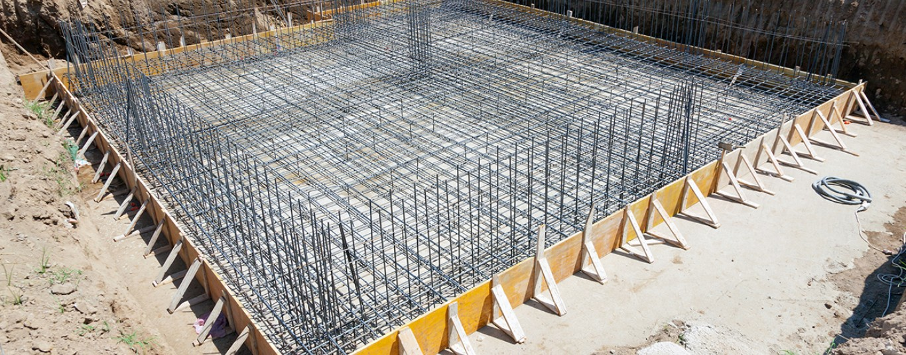
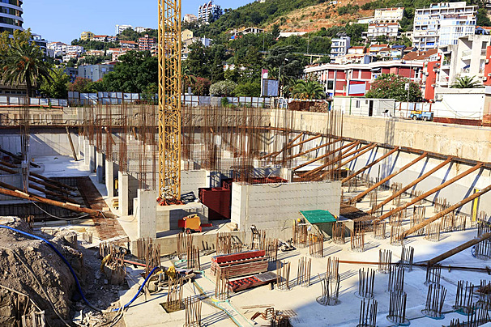
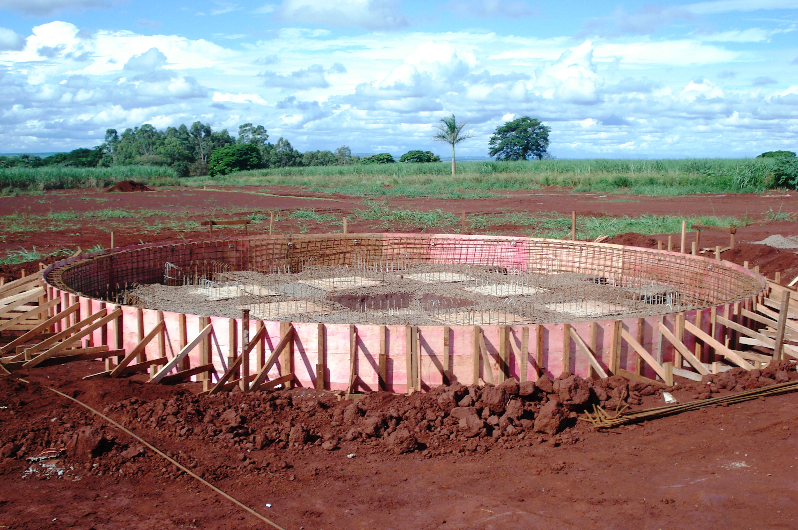
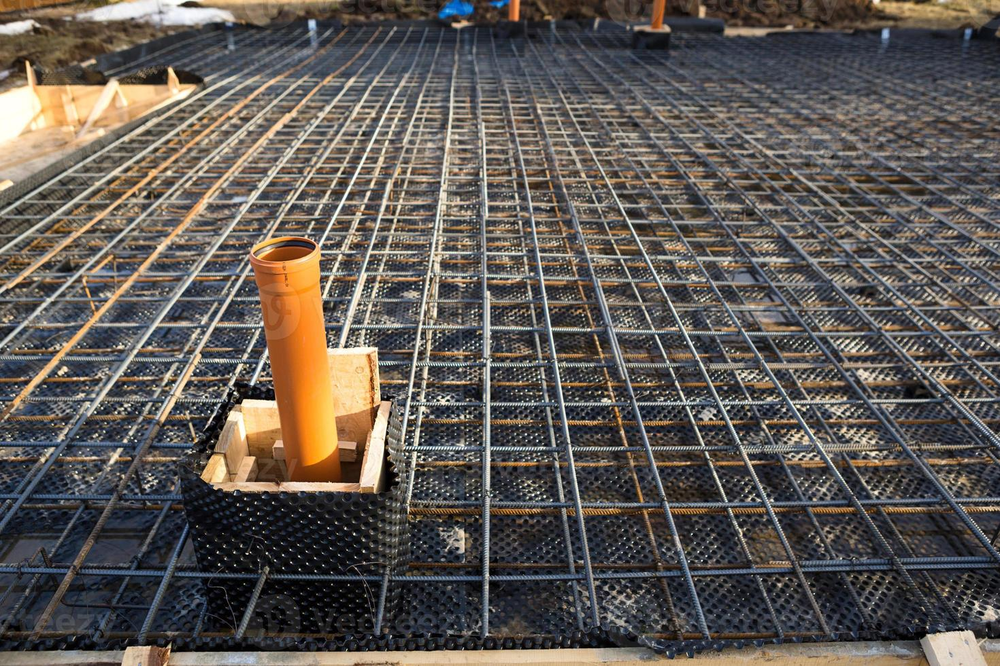

Projetamos e executamos fundações seguras para obras residenciais, comerciais e industriais.
Fale com um engenheiroFundação superficial individual para suportar cargas concentradas em colunas de estruturas.
Fundação contínua para distribuir cargas ao longo de paredes ou linhas de suporte estrutural.
Laje de fundação que distribui cargas uniformemente sobre uma área extensa do terreno.
Elementos profundos para transferir cargas estruturais a camadas de solo mais resistentes.
Blocos pré-fabricados para execução rápida e econômica de fundações rasas.
Análises especializadas para avaliar condições estruturais e geotécnicas. Inclui laudos de trincas, estruturais, fundação, estabilidade, infiltração e recalque.

Complexos logísticos estabilizados com estacas raízes profundas.

Fundações em de grandes shoppings garantindo estabilidade.

Execuções sustentáveis em condomínios de alto padrão.

Desenvolvimento detalhado para fundações complexas e robustas.
A Construr é uma empresa especializada em engenharia de fundações, oferecendo soluções completas para obras residenciais, comerciais e industriais. Com compromisso com a qualidade, segurança e eficiência, atendemos clientes com projetos personalizados e execução precisa.
O engenheiro responsável possui mais de 30 anos de experiência em gestão e segurança de obras. Sua expertise garante que cada projeto seja executado com os mais altos padrões de qualidade e conformidade, assegurando a satisfação e confiança dos clientes.